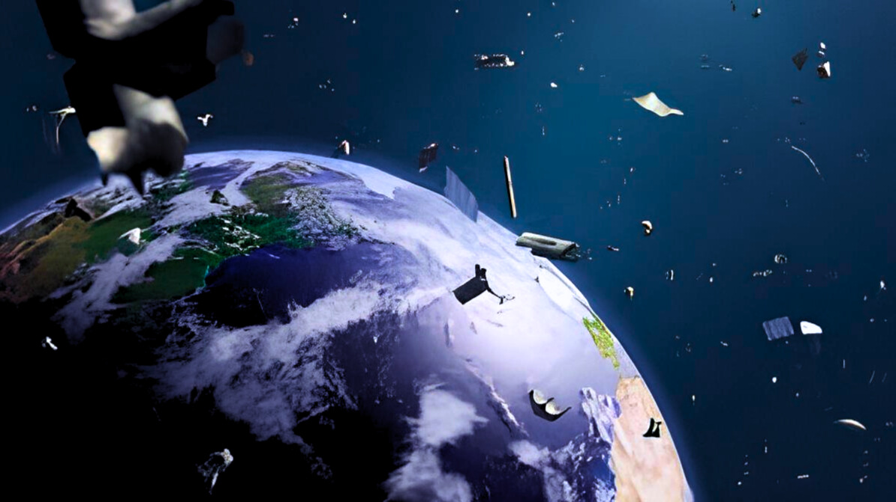
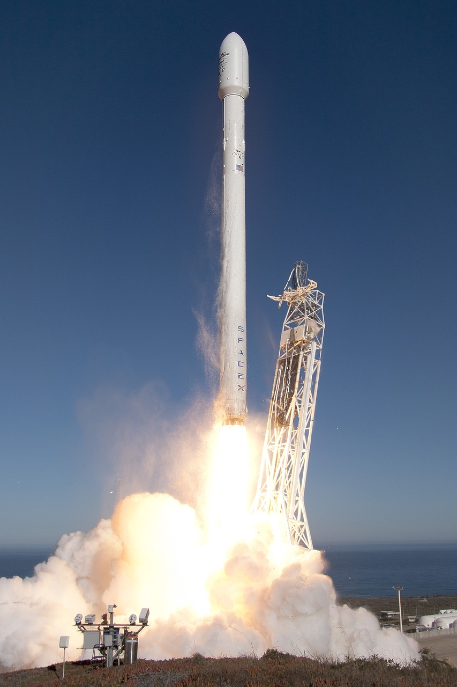
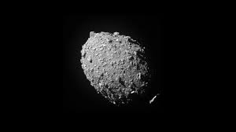

Novidades |
Documentários |
PodCasts |
Sobre nós |
|  |
30 mil objetos: Órbita da Terra está cheia de lixo espacial |
|  |
A Starship, apontada como a nave mais poderosa do mundo. |
|  | Asteroide atingido por nave da Nasa foi remodelado após impacto, diz estudo |